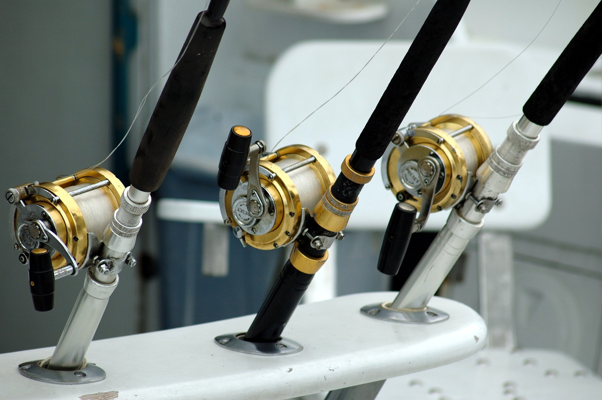

Как выбрать снаряжение
Успех рыбной ловли зависит не только от места, но и снаряжения, которое моментально возведет любого новичка в ранг лучшего рыболова. Но прежде чем отправляться в интернет магазин за покупками, стоит выяснить, какое снаряжение подойдет для вашей цели.
Например, для подводной охоты мало одного ружья, так как необходимо владеть техникой плавания и ныряния.
Так и для рыбалки с берега нет необходимости приобретать лодочный мотор и выбирать лодку.
- Для летней рыбалки понадобится:
- Лодка (гребная или под мотор);
- Лодочный мотор (бензиновый или электродвигатель);
- Рыболовный костюм;
- Обувь;
- Головной убор;
- Рыболовный жилет;
- Термобелье;
- Перчатки;
- Ведро для прикорма и для воды;
- Ящик спиннингиста или рыболовный;
- Рюкзак для вещей;
- Термос;
- Снасти;
- Чехлы и защиту под снасти;
- Сачок;
- Ящик для мормышек;
- Плоскогубцы;
- Экстрактор;
- Нож;
- Стул;
- Солнцезащитные очки;
- Спрей от москитов;
- Средства связи;
- Эхолот;
- Рыболовная видеокамера;
- Навигатор.
- Для зимней рыбалки понадобится:
- Ледобур и аксессуары к нему;
- Багор;
- Жерлица;
- Ящик рыболовный;
- Коробка для мормышек;
- Наколенники;
- Спасалки со свистком;
- Черпак;
- Пешня;
- Костюм зимний;
- Обувь зимняя;
- Головной убор;
- Перчатки;
- Рюкзак;
- Палатка;
- Средство обогрева;
- Сани-волокуши;
- Мотобуксировщик или Снегоход;
- Фонарик;
- Средства связи;
- Эхолот;
- Навигатор.